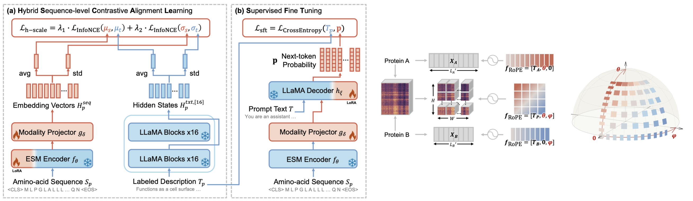
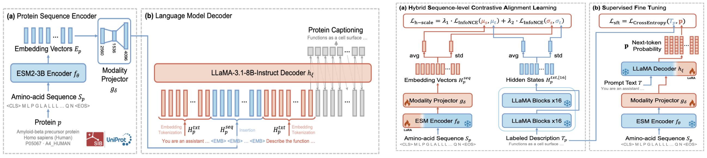
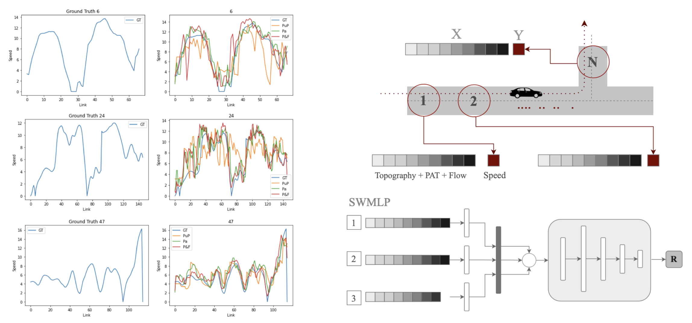
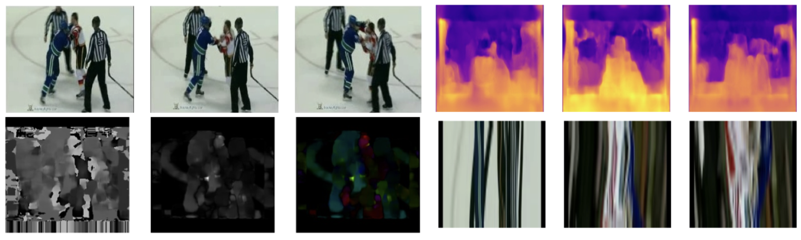

PhD.
Multimodal AI for Science, Biomedicine & Applications
I am a postdoctoral researcher at the Laboratoire d’Informatique de l’École Polytechnique (LIX), where I develop multimodal and generative AI methods for scientific and biomedical research. I received my Ph.D. in Signal, Image Processing, and Automation from UGE, where I conducted my doctoral research within the A3SI team at the Laboratoire d’Informatique Gaspard-Monge (LIGM).
My research interests span multimodal learning, scientific machine learning, computer vision, and generative modeling, with a particular emphasis on developing reliable, controllable, and computationally efficient AI systems for scientific discovery. I am also interested in bridging research and industry, exploring how AI and scientific advances can be translated into practical technologies and impactful real-world applications.
Heterogeneous modalities, alignment, information balancing, and identifying complementary sources of information.
Biochemical function prediction, curation of scientific datasets, drug design, and low-homology.
Image and video understanding, object detection, image analysis, diffusion.
Large language models, generative models, cultural unbiasing, and frugal AI.

A coordinate-aligned decoding approach to predict protein-protein interactions using structural pair maps and multimodal learning.

A multimodal contrastive framework for protein function prediction by aligning structural, sequence and textual information.

A speed prediction method independent of large historical speed data, using the road topographical features of a vehicle's trajectory.

A multi-stream CNN approach for automatic detection of fight events in video sequences, combining spatial and temporal information.
Member of the scientific commitee. Speaker outreach, and event organization.
See event →Bio Foundational Models: Extracting and decoding patterns - PUC Minas - 2026
Third place for the best bachelor’s thesis award in computer science PUC MG.